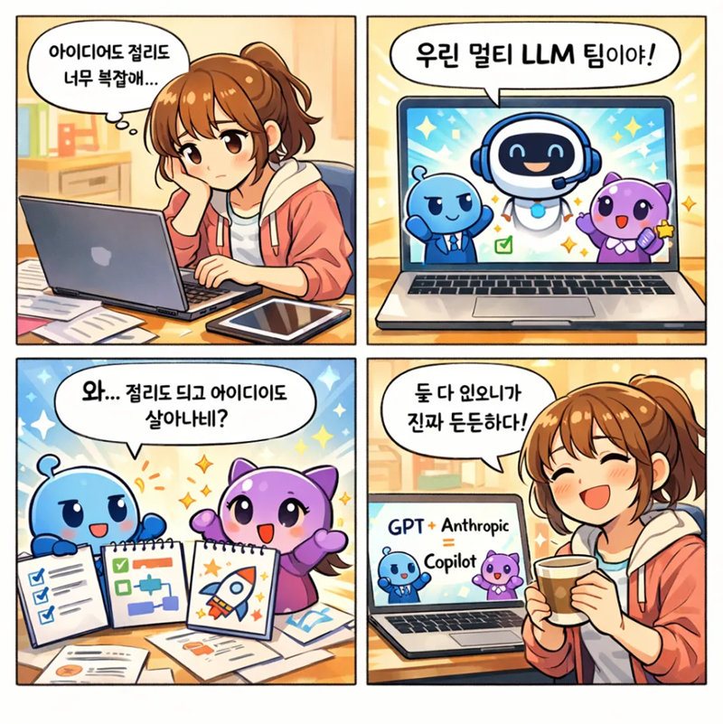
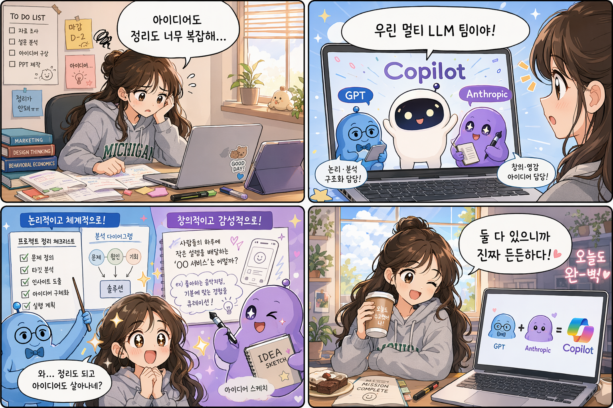
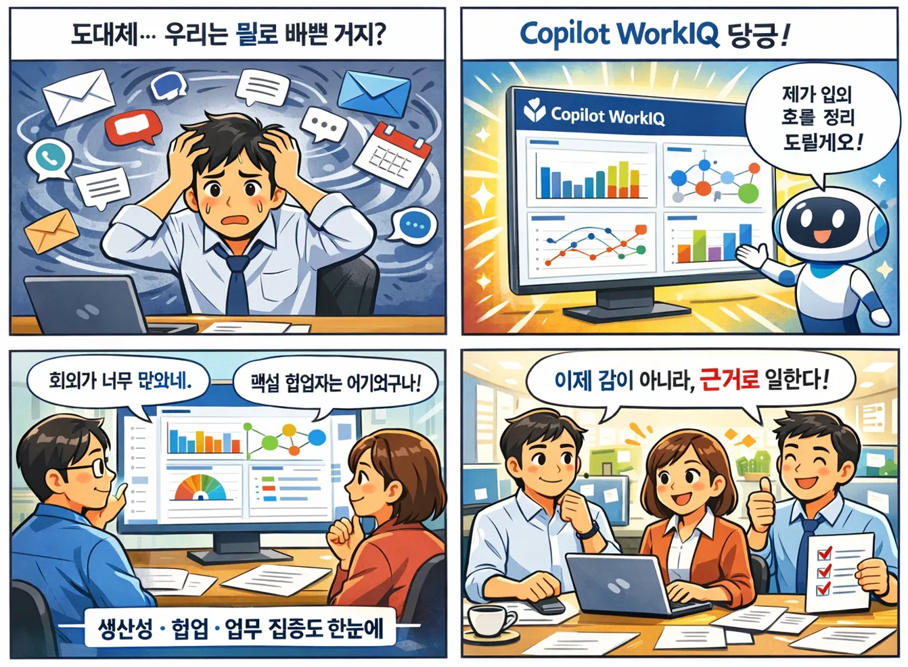
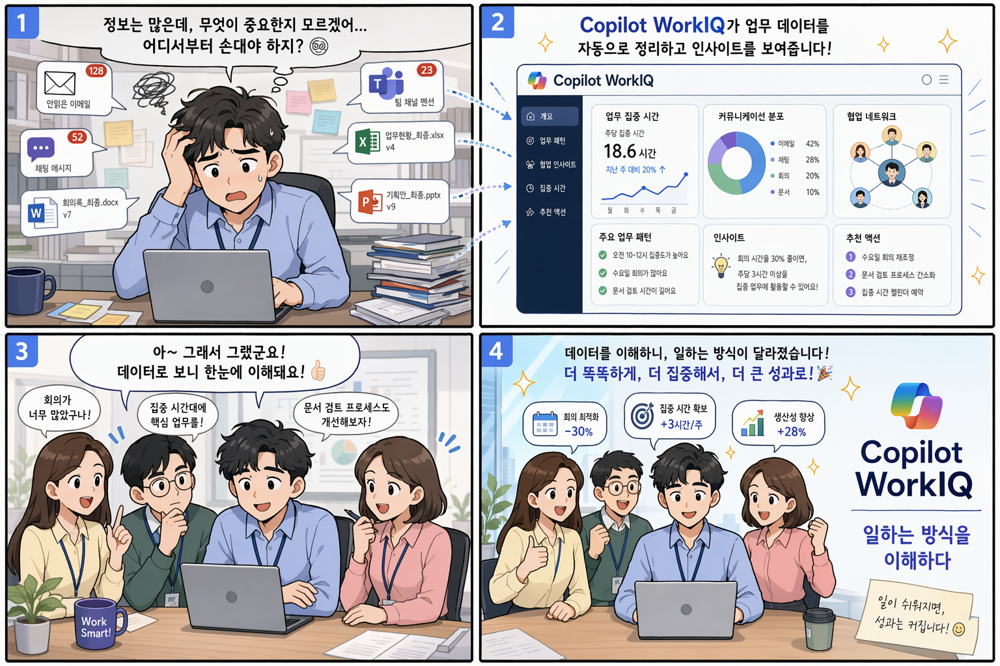
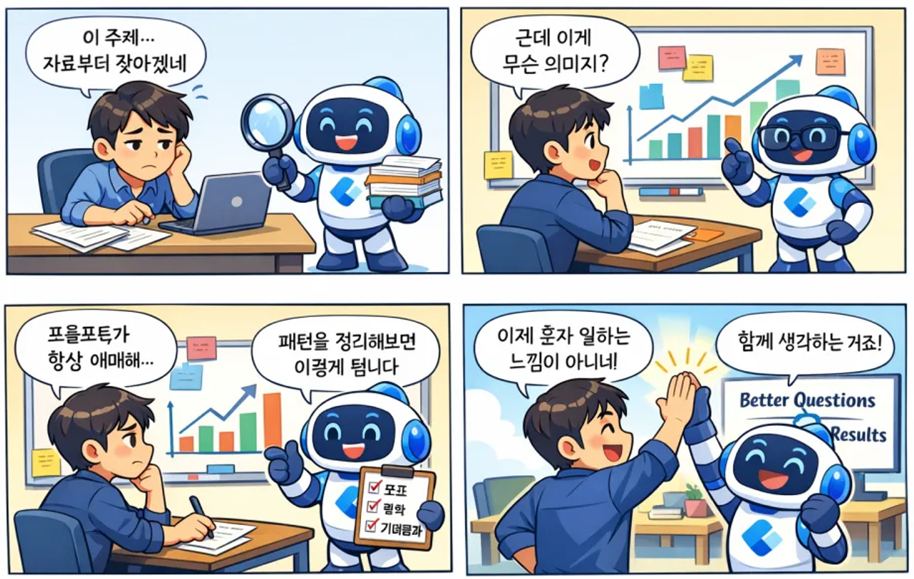
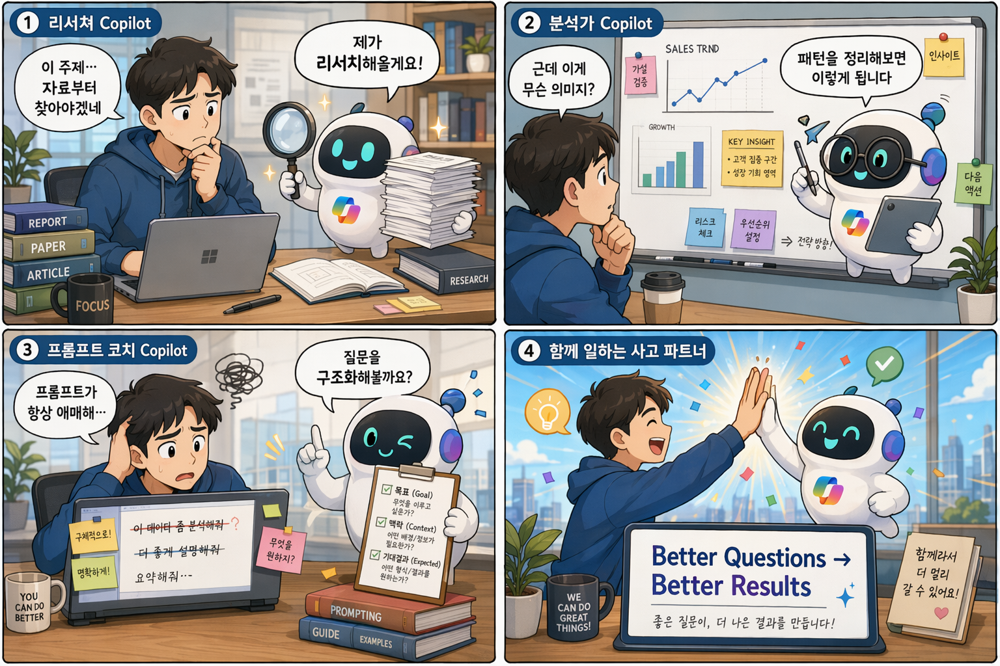
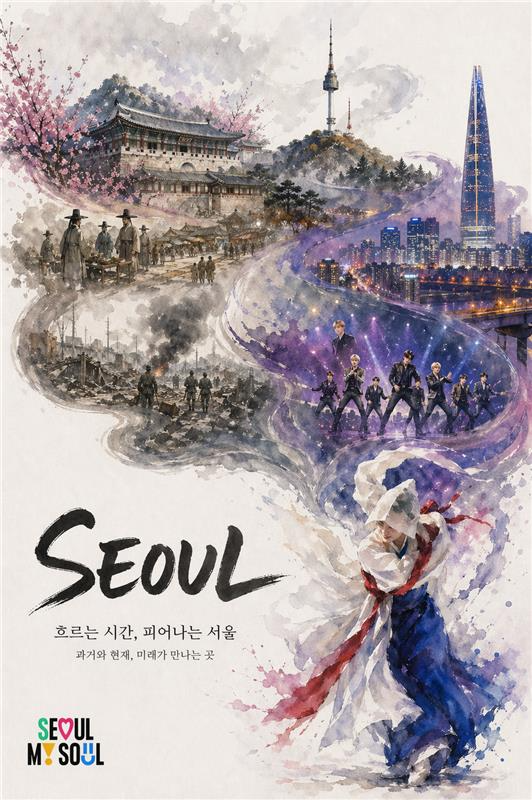
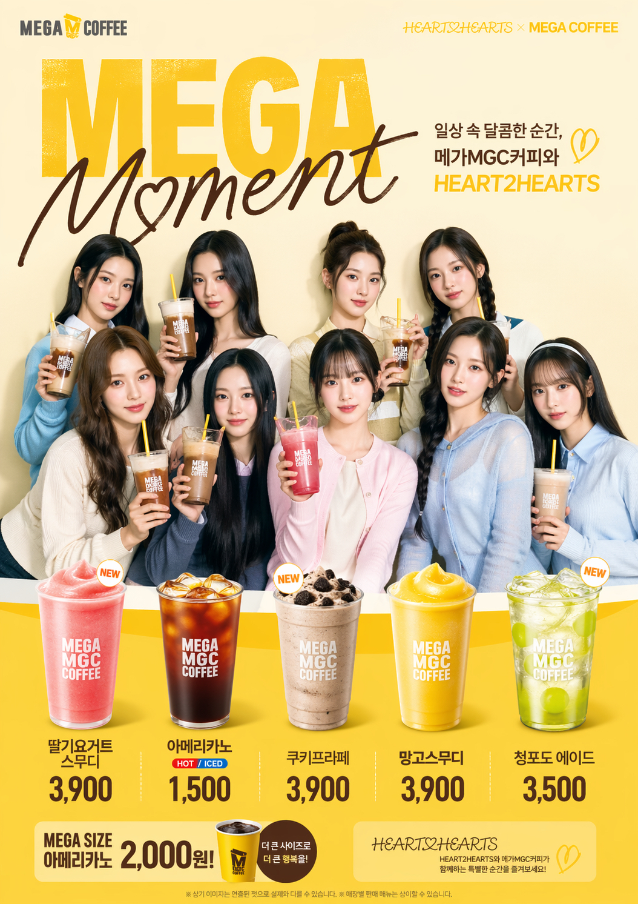
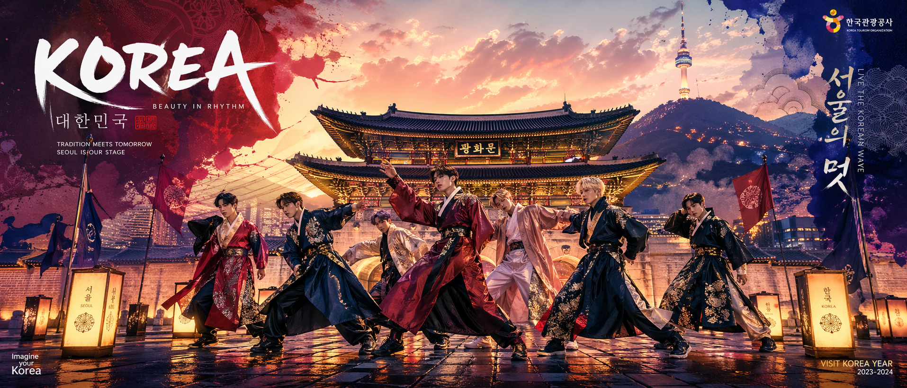

gpt-image-1.5 →
gpt-image-2
동일 프롬프트, 다른 결과
같은 한국어 프롬프트를 두 모델에 넣었을 때 결과가 어떻게 달라지는지, 그리고 gpt-image-2에서는 어떻게 프롬프트를 다시 작성하는 것이 좋은지 OpenAI Cookbook 기준으로 정리했습니다.
무엇이 바뀌었나
gpt-image-2는 gpt-image-1.5·gpt-image-1의 다음 세대 이미지
생성 모델로, OpenAI가 "신규 작업의 기본값"으로 권장하는 모델입니다. 사진 품질, 편집
안정성, 이미지 속 텍스트 렌더링, 복잡한 구조(인포그래픽·다이어그램·네컷 만화)의 일관성이 눈에 띄게
향상되었습니다.
결론부터 말하면 — gpt-image-1.5는 "그럴듯한 일러스트", gpt-image-2는 "레이아웃·타이포그래피·텍스처까지 정돈된 결과물"을 돌려줍니다. 첫 장에서 바로 쓸 수 있는 수준이 올라갔기 때문에, 재시도·수작업 수정 비용이 줄어듭니다.
1.5 → 2 주요 변경
| 항목 | gpt-image-1.5 | gpt-image-2 NEW |
|---|---|---|
| 포지셔닝 | 기존 워크플로 호환 유지용 | 신규 작업의 기본값 — 사진·편집·브랜드·텍스트 렌더링 전반 |
| 품질 옵션 | low / medium / high | low / medium / high — low조차 이전 세대 최고 품질을 상회 |
| Input fidelity | low / high 수동 지정 | 기본 출력이 이미 고충실 — 대부분의 경우 지정 불필요 |
| 사이즈 | 1024×1024, 1024×1536, 1536×1024, auto | 제약(최대 변 < 3840, 16 배수, 3:1 이내) 안에서 임의 해상도, 최대 2560×1440까지 안정 |
| 이미지 속 텍스트 | 짧은 영문·로고 위주, 한글은 쉽게 깨짐 | 글자 가독성·커닝·레이아웃 일관성 향상 — 만화 말풍선·슬라이드 수준 가능 |
| 네컷 만화 / 패널 구성 | 패널 분할·캐릭터 일관성 흔들림 | 패널 간 스토리 비트와 캐릭터 일관성 유지 |
| 언제 1.5를 남겨둘까 | 프롬프트 마이그레이션 검증 / 회귀 테스트 / 아직 옮기지 않은 레거시 워크플로용 | |
출처: OpenAI Developers — GPT Image Generation Models Prompting Guide (2026-04).
gpt-image-2 프롬프트 8원칙
OpenAI Cookbook이 정리한, 알파 테스트 전반에서 반복적으로 관찰된 프롬프트 패턴입니다. 기존 1.5 프롬프트를 그대로 2로 옮겨도 품질은 올라가지만, 아래 원칙에 맞게 다시 쓰면 첫 장에서 쓸 수 있는 결과물 확률이 높아집니다.
1. 구조 + 목적
배경 → 주제 → 디테일 → 제약 순서로. "광고", "UI 목업", "인포그래픽"처럼 용도를 명시해 모델의 "모드"를 설정하세요.
2. 유지보수 가능한 포맷
JSON, 라벨된 섹션, 태그, 짧은 문단 — 어떤 포맷이든 의도와 제약이 분명하면 OK. 한 문장 초장문 대신 줄바꿈 + 라벨을 선호.
3. 구체성 + 품질 레버
재질·질감·매체(수채·3D 렌더·사진)를 명시. 포토리얼리즘이 필요하면 "photorealistic"
단어를 직접 포함하세요.
4. 지연 vs 충실도
일상·대량 생성은 quality="low"로 시작. 작은 텍스트, 밀도 높은 인포그래픽, 클로즈업
인물은 medium/high 비교 후 결정.
5. 구도와 조명
프레이밍(클로즈업·와이드·탑다운), 시점, 조명/무드를 지정. 배치가 중요하면 "로고 우상단", "피사체 중앙, 좌측 여백" 같이 명시.
6. 바꿀 것 vs 유지할 것
편집 시 "change only X" + "keep everything else the same"을 반복. 채도·각도·레이아웃을 건드리지 말 것도 명시.
7. 이미지 속 텍스트
리터럴 텍스트는 따옴표나 ALL CAPS로. 어려운 단어는 letter-by-letter로 풀어쓰고,
작은 글씨는 medium/high로.
8. 덧붙이지 말고 반복하라
깨끗한 베이스 프롬프트에서 출발해 "조명을 더 따뜻하게", "여분의 나무 제거"처럼 작은 단일 변경으로 반복. 중요한 제약은 매 반복마다 다시 적어주세요.
업무에서 가장 많이 쓰는 Top 3
OpenAI Cookbook의 10여 개 use case 중, M365 · 사내 교육 · 마케팅 업무에서 즉시 재사용 가능한 3가지를 추렸습니다. 각 항목은 ① 어떤 상황에 쓰나 → ② 프롬프트 → ③ Python 호출 코드 순서이고, 결과 이미지와 나머지 use case는 Cookbook에서 바로 확인할 수 있습니다.
인포그래픽 — 한 장으로 전달하는 설명 자료
제품 플로우, 프로세스 맵, 포스터, 타임라인 같은
"구조화된 정보를 한 장으로" 전달해야 하는 상황. 빽빽한 레이블과 화살표가 많으므로
quality="high"를 권장합니다.
프롬프트
Create a detailed Infographic of the functioning and flow of an automatic
coffee machine like a Jura.
From bean basket, to grinding, to scale, water tank, boiler, etc.
I'd like to understand technically and visually the flow.Python 호출
from openai import OpenAI
client = OpenAI()
result = client.images.generate(
model="gpt-image-2",
prompt=prompt,
size="1024x1536", # 세로형 인포그래픽
quality="medium",
)광고 · 캠페인 크리에이티브 — "창작 브리프"로 쓰기
브랜드 포지셔닝 · 타깃 · 장면 · 태그라인을 한 프롬프트에 묶어 기술 스펙이 아닌 창작 브리프 처럼 작성하면, 모델이 아트디렉션을 보완해 줍니다. 이미지에 들어갈 카피는 반드시 따옴표로 한 번만.
프롬프트
Give me a cool in-culture ad / fashion shot for a brand called Thread.
It's a hip young street brand. The ad shows a group of friends hanging out
together with the tagline "Yours to Create."
Make it feel like a polished campaign image for a youth streetwear audience:
stylish, contemporary, energetic, and tasteful.
Use clean composition, strong color direction, natural poses,
and premium fashion photography cues.
Render the tagline exactly once, clearly and legibly, integrated into the
ad layout.
No extra text, no watermarks, no unrelated logos.Python 호출
result = client.images.generate(
model="gpt-image-2",
prompt=prompt,
size="1024x1536",
quality="medium",
)슬라이드 · 다이어그램 · 차트 — "산출물 스펙"으로 쓰기
일러스트 요청이 아닌 산출물(아티팩트) 스펙처럼 작성합니다. 캔버스 크기 · 위계 · 실제
문구와 수치 · 타이포그래피 · 배제 목록을 모두 프롬프트에 넣고, landscape + quality="high"가
기본.
프롬프트
Create one pitch-deck slide titled "Market Opportunity" that feels like a
real Series A fundraising slide from a YC-backed startup.
Use a clean white background, modern sans-serif typography like Inter,
and a crisp, minimal layout. The slide should include:
* A TAM/SAM/SOM concentric-circle diagram in muted blues and grays
* Specific, believable market sizing numbers:
- TAM: $42B
- SAM: $8.7B
- SOM: $340M
* A clean bar chart below showing market growth from 2021 to 2026,
with a subtle upward trend
* Small footnotes: "AGI Research, 2024" and "Internal analysis"
* A company logo placeholder in the bottom-right corner
Avoid clip art, stock photography, gradients, shadows, decorative elements,
or anything that feels generic or overdesigned.Python 호출
result = client.images.generate(
model="gpt-image-2",
prompt=prompt,
size="1536x864", # 16:9 덱 슬라이드
quality="high", # 작은 텍스트·숫자는 high 권장
)같은 프롬프트, 두 모델 비교
아래 세 가지는 동일 한국어 프롬프트를 두 모델에 각각 넣은 결과입니다. 특히 이미지 속 한글 텍스트, 네컷 구분선, 캐릭터 일관성이 gpt-image-2에서 어떻게 개선되었는지 주목해 보세요. 프롬프트 전문은 각 항목의 "프롬프트 펼쳐보기"에서 확인할 수 있습니다.
대학생의 "Multi-LLM 팀" — 밝은 웹툰 스타일 네컷
Z세대 감성의 밝은 웹툰. 캐릭터 두 명(파란=GPT, 보라=Anthropic)과 주인공 대학생의 감정 변화를 네 컷에 배치하고, 마지막 컷에는 "GPT + Anthropic = Copilot" 텍스트를 넣도록 요청했습니다.


차이점 — 1.5는 캐릭터 디자인은 귀엽지만 말풍선 한글이 "멀티 LLM" 정도에서
깨지고, 마지막 컷의 로고 텍스트도 뭉개집니다. 2는 캐릭터 비율·표정·배경 소품(책·포스트잇·노트북)까지
일관되고, 한글 말풍선과 "GPT + Anthropic = Copilot" 카피가 깔끔하게 들어갑니다.
밝고 귀여운 웹툰 스타일의 네 컷 만화.
주인공은 대학생 딸 캐릭터(20대 초반, 캐주얼 복장, 노트북과 태블릿 사용).
전체 톤은 밝고 유머러스하며 Z세대 감성.
1컷: 과제와 아이디어 정리에 지친 대학생이 노트북 앞에서 고민 중.
말풍선: "아이디어도 정리도 너무 복잡해…"
2컷: 노트북 화면에서 'Copilot' 캐릭터가 등장. 화면 속에 두 개의 작은 캐릭터가 보임:
- 하나는 논리적이고 차분한 파란색 캐릭터(GPT 느낌)
- 하나는 창의적이고 감성적인 보라색 캐릭터(Anthropic 느낌)
말풍선: "우린 멀티 LLM 팀이야!"
3컷: 파란 캐릭터는 구조화된 체크리스트와 깔끔한 다이어그램을 보여주고,
보라 캐릭터는 창의적인 문장, 비유, 아이디어 스케치를 펼쳐 보임.
주인공 눈이 반짝이며 감탄.
말풍선: "와… 정리도 되고 아이디어도 살아나네?"
4컷: 과제를 완성하고 커피를 마시며 여유 있게 웃는 대학생.
노트북 화면에는 'GPT + Anthropic = Copilot' 아이콘.
마지막 말풍선: "둘 다 있으니까 진짜 든든하다!"
컬러풀한 색감, 부드러운 선, 웹툰 느낌, SNS에 올리기 좋은 구성.Copilot WorkIQ — 비즈니스 만화로 가치 전달
한국 직장인 분위기의 4컷 웹툰. 1컷(정보 과부하) → 2컷(WorkIQ 대시보드) → 3컷(팀의 이해) → 4컷(효율적 업무, 태그라인 포함)이라는 문제 → 해결 → 변화 구조.


차이점 — 1.5는 "Copilot WorkIQ" 로고 글자가 겹치고 대시보드가 막연한 그래프 덩어리로 표현됩니다. 2는 대시보드 안에 "개요 · 업무 패턴 · 협업 인사이트 · 집중 시간 · 추천 액션" 같은 실제 메뉴가 읽히고, 4컷째 "회의 최적화 −30%, 집중 시간 +3시간/주, 생산성 +28%" 같은 수치도 자연스럽게 들어갑니다. 이게 곧 슬라이드처럼 쓸 수 있는 이미지.
목표: Copilot WorkIQ의 장점을 설명하는 네컷 만화 스타일 일러스트를 생성한다.
컨텍스트: 기업 환경에서 직원과 팀이 업무 데이터를 이해하지 못해 혼란을 겪다가,
Copilot WorkIQ를 통해 업무 패턴과 협업 인사이트를 시각적으로 이해하고
더 똑똑하게 일하게 되는 스토리.
스타일:
- 깔끔한 비즈니스 만화 스타일
- 밝고 친근한 색감
- 한국 직장인 분위기
- 4컷 웹툰 레이아웃
컷 구성:
1컷: 이메일, 채팅, 문서 아이콘에 둘러싸여 혼란스러워하는 직원
2컷: Copilot WorkIQ 대시보드가 등장하며 데이터를 정리해주는 장면
3컷: 팀이 인사이트를 이해하고 고개를 끄덕이는 모습
4컷: 효율적으로 일하며 만족해하는 팀.
"Copilot WorkIQ – 일하는 방식을 이해하다" 문구 포함
출력 기대: 한 장의 이미지 안에 4컷이 명확히 구분된 만화 형태.Copilot Agent — 도구가 아니라 사고 파트너
Copilot을 리서처 → 분석가 → 프롬프트 코치 → 사고 파트너로 진화시키는 4컷. 각 컷마다 Copilot의 소품(돋보기·안경·체크리스트)이 역할을 시각적으로 구분하는 것이 포인트.


차이점 — 1.5는 패널 번호·역할 라벨이 비어 있고 체크리스트 텍스트가 비문자로 나옵니다. 2는 각 컷 상단에 "① 리서쳐 Copilot / ② 분석가 Copilot / ③ 프롬프트 코치 Copilot" 라벨이 붙고, 마지막 컷의 "Better Questions → Better Results" 슬로건까지 깔끔하게 타이포로 정리됩니다. 네컷 전체에서 Copilot 캐릭터의 디자인이 일관된다는 점도 중요한 개선점.
목표: Copilot Agent 사용 경험(리서쳐, 분석가, 프롬프트 코치)을 표현하는
네컷 만화를 생성한다. Copilot을 단순한 도구가 아니라 '사고 파트너'로
인식하게 만드는 것이 목적이다.
맥락: 지식 근로자 또는 기술 트레이너가 Copilot을 사용하며 업무를 진행하는 상황.
Copilot은 친근한 AI 캐릭터로 의인화되어 등장하며, 컷이 진행될수록 역할이 진화한다.
전체 톤은 공감되고 가볍지만, 인사이트가 느껴져야 한다.
네컷 구성:
1컷 – 리서쳐 Copilot
책상 앞에서 고민하는 사용자. Copilot이 돋보기와 문서 더미를 들고 등장.
사용자: "이 주제… 자료부터 찾아야겠네"
Copilot: "제가 리서치해올게요!"
2컷 – 분석가 Copilot
화이트보드에 그래프와 포스트잇. Copilot이 안경을 쓰고 데이터를 분석.
사용자: "근데 이게 무슨 의미지?"
Copilot: "패턴을 정리해보면 이렇게 됩니다"
3컷 – 프롬프트 코치 Copilot
사용자가 프롬프트를 쓰다 지우며 고민.
Copilot이 코치처럼 체크리스트(목표, 맥락, 기대결과)를 들고 조언.
사용자: "프롬프트가 항상 애매해…"
Copilot: "질문을 구조화해볼까요?"
4컷 – 함께 일하는 사고 파트너
사용자와 Copilot이 하이파이브. 화면 문구: "Better Questions → Better Results"
협업과 자신감이 느껴지는 분위기.
스타일: 깔끔하고 현대적인 카툰 스타일. 밝은 색감, 표정이 잘 드러나는 캐릭터.
말풍선이 읽기 쉬운 구성.한국 고객이 gpt-image-2로 만든 결과물
워크샵·사내 PoC에서 한국 고객이 gpt-image-2로 직접 만들어 본 결과물을 프롬프트 없이 공유합니다. 여행·마케팅·내부 캠페인처럼, 실제 업무에서 바로 쓰일 수 있는 수준의 사진 퀄리티·한글 타이포그래피를 확인해 보세요.

수채 일러스트 + 캘리그래피 타이틀, 브랜드 로고까지 한 장에.

모델 사진 합성 + 제품 라인업 + 가격 정보까지 편집 디자인 수준.

한복 K-pop 퍼포먼스 + 광화문 실사 합성, 와이드 캠페인 크리에이티브.
이 문서는 OpenAI Developers의 GPT Image Generation Models Prompting Guide (2026-04-21) 내용을 참고해 한국 업무 맥락에 맞게 정리했습니다. 모델 사양·가격·리전 정보는 변경될 수 있으므로 최신 공식 문서를 반드시 확인해 주세요.